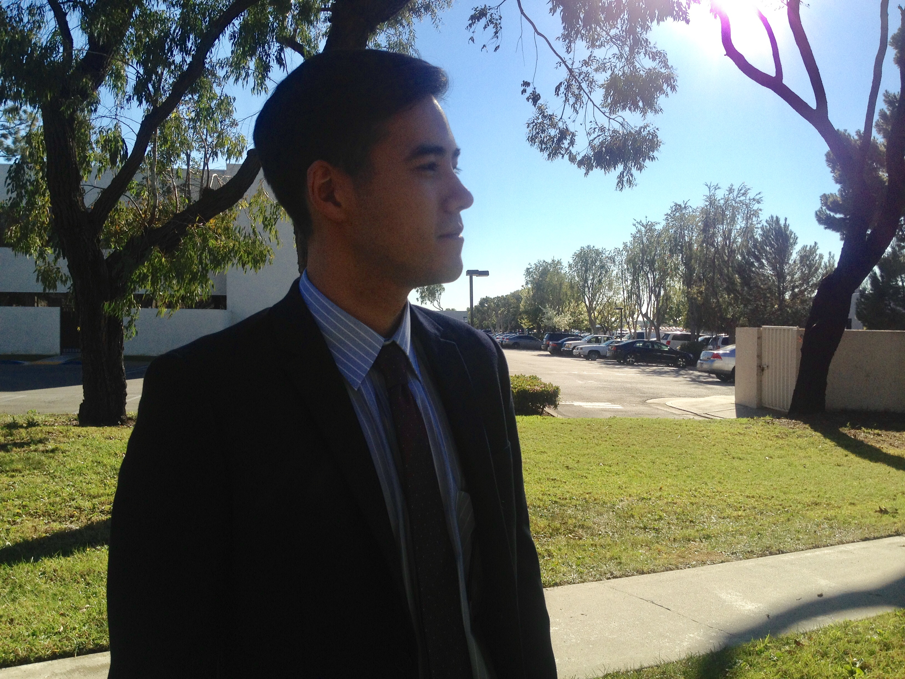

About Me
Welcome to my website! My name is Alex Warfield. I was born in Anaheim, California on October 16th, 1992. I graduated from high school in 2010, went to a community college for 2 years, and transferred to a university to get my degree in psychology. Throughout the years, I've worked at some interesting jobs that have shaped my life. The first job I worked at was at a Mental Health Clinic where I helped set up community events to teach the public the importance of mental health issues. Working there really helped build my public relations skills. The next job I worked at was as an intern for a Non-profit Political Organization. I did a lot of canvasing to pass bills to disclose which businesses and parties are backing certain political issues. I had to do a lot of signature gathering and cold-calling which helped me a lot in getting out of my shell and talking to people. After that, I worked as an Administrative Assistant at an Online School for Civil Engineering where I managed the school's remote livestream system, made updates to the front-end of their website, and other IT duties. After working at the Engineering school, I ended up switching my career focus to computer science because I enjoyed it so much. And since then, I've begun my journey to become a web developer.